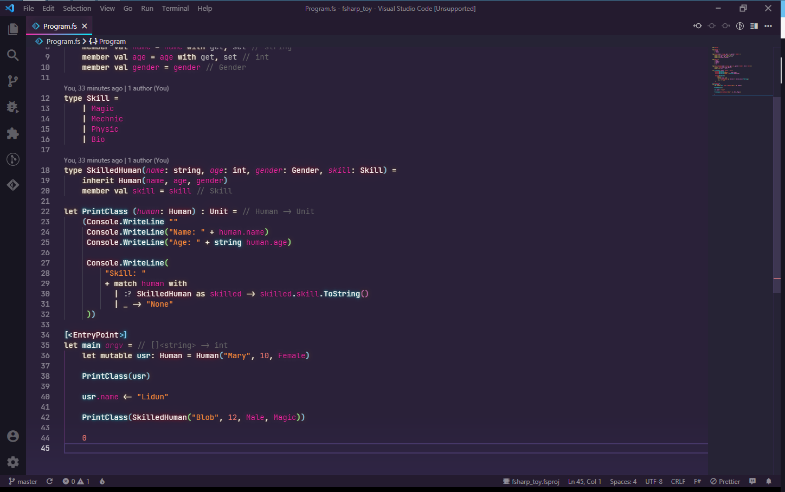
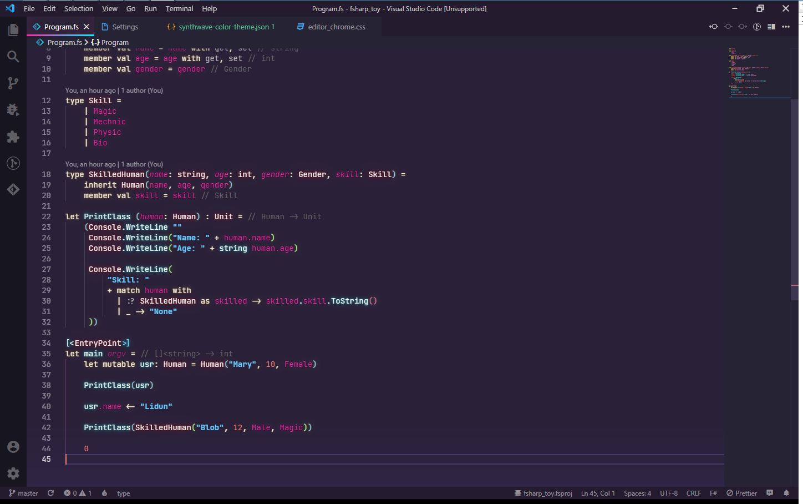

SynthWave ‘84¶
前言¶
这是一款 Visual Studio Code 上的霓虹灯主题
默认效果预览

配置¶
VSC 内配置¶
- Brightness 亮度, 取值区间为 0.0 到 1.0
- Disable Glow 禁用发光效果
安装后请不要忘记打开 VSC 控制台并执行指令 Enable Neon Dream 来开启霓虹特效
外部配置¶
参考文档
Github Issue
在 VSC 内配置¶
某些配色可以在 Visual Studio Code 的 settings.json 内完成配置
例如某窗口的背景色, 进度条颜色等
| JSON | |
|---|---|
1 2 3 4 5 6 7 8 9 10 11 12 | |
此处全部可用配置项可在 Visual Studio Code 官网 找到
修改 SynthWave 默认配置¶
某些配色是写在 SynthWave 自己的配置文件里的
本体应当位于 ${用户目录}/.vscode/extensions/robbowen.syhthwave-vscode-${版本}/
你可以在 themes/ 下找到默认的配色方案并根据需要进行修改
例如默认的字符串配色是 #ff8b39 深橙色
在 themes/synthwave-color-theme.json 中找到
| JSON | |
|---|---|
1 2 3 4 5 6 7 8 9 10 11 | |
修改 settings 项内容使其改变配色
例如改成
| JSON | |
|---|---|
1 2 3 4 | |
效果如图

可以通过对比此图与文章开头的默认预览图来直观的比较
配置生效需要重启窗口
打开 VSC 控制台输入 Reload Window
更高级的配置¶
你可以在插件本体目录的 src/ 下找到插件实现的代码
如果技术到家你当然可以直接修改代码并 Reload Window 来将其调教成你最喜欢的形态
不过这么做就相当于是在编写 VSC 插件了吧!
所以在这里就不细说
可以直接查看如何编写 VSC 主题之类的文章